Slow Southern, backroads buddy
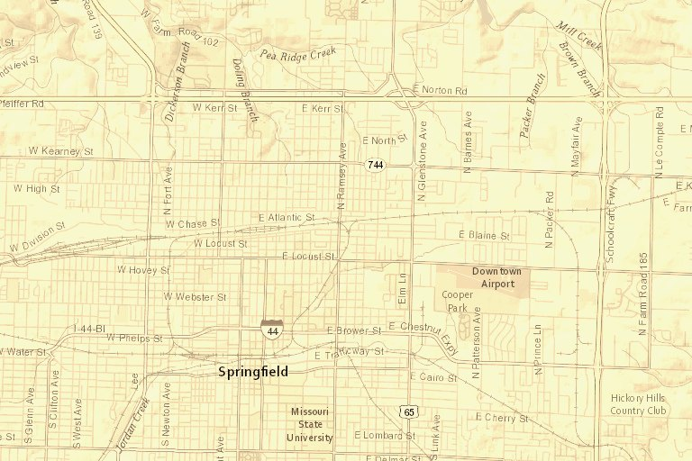
Source: Esri NatGeo World Map — server.arcgisonline.com NatGeo_World_Map tile/{z}/{y}/{x}
App treatment: CSS filter sepia(0.9) brightness(1.02) contrast(0.95) on the tile layer
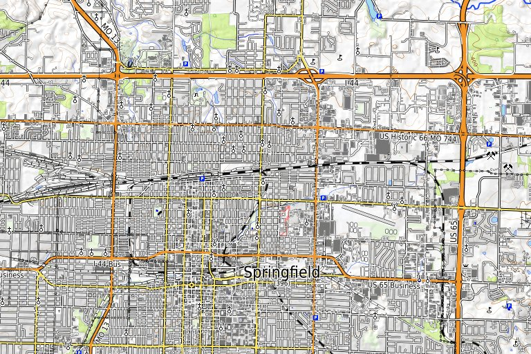
Source: OpenTopoMap — tile.opentopomap.org/{z}/{x}/{y}.png
App treatment: none — the tile source itself
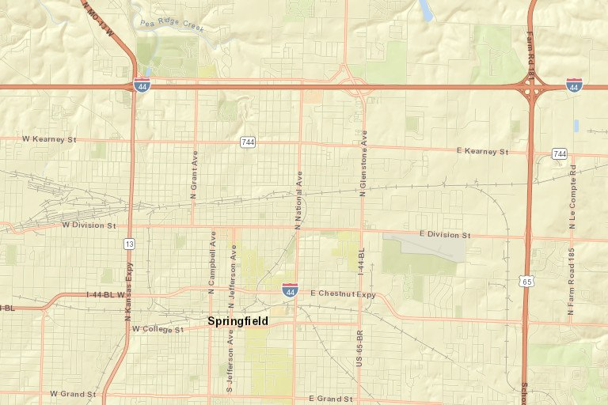
Source: Esri World Street Map — server.arcgisonline.com World_Street_Map tile/{z}/{y}/{x}
App treatment: none — the tile source itself
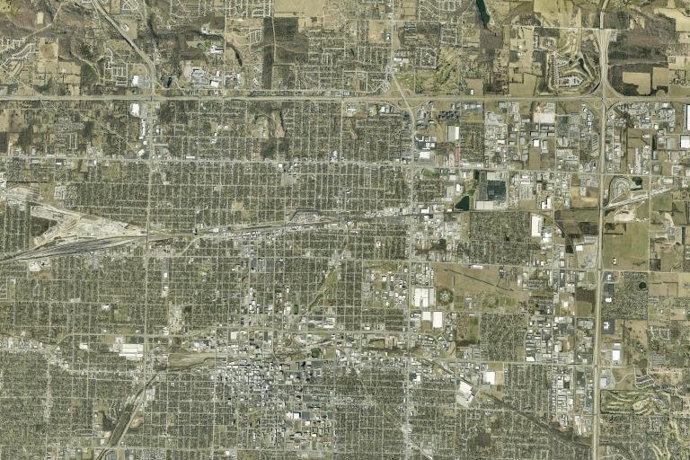
Source: Esri World Imagery satellite — server.arcgisonline.com World_Imagery tile/{z}/{y}/{x}
App treatment: none — the tile source itself
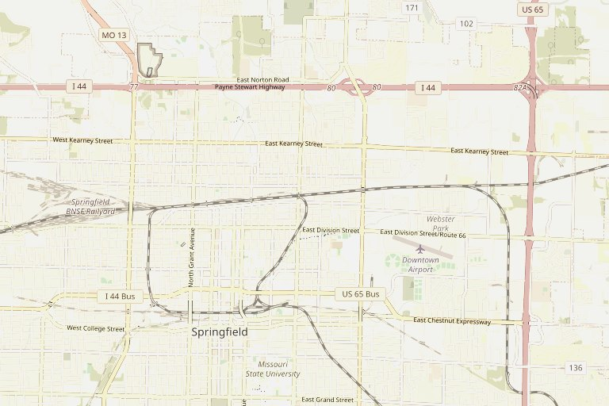
Source: OpenStreetMap tiles — tile.openstreetmap.org/{z}/{x}/{y}.png
App treatment: CSS filter sepia(0.5) saturate(0.7) brightness(1.07) contrast(0.9)
Thirty-something, attitude, ridin' dirty (in spirit)
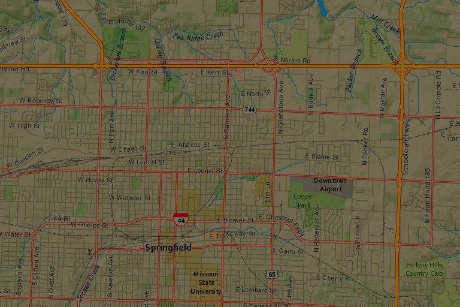
Source: Esri NatGeo World Map — server.arcgisonline.com NatGeo_World_Map tile/{z}/{y}/{x}
App treatment: CSS filter brightness(0.5) contrast(1.35) saturate(1.7) — the atlas tiles run dark and rich, like the city at night
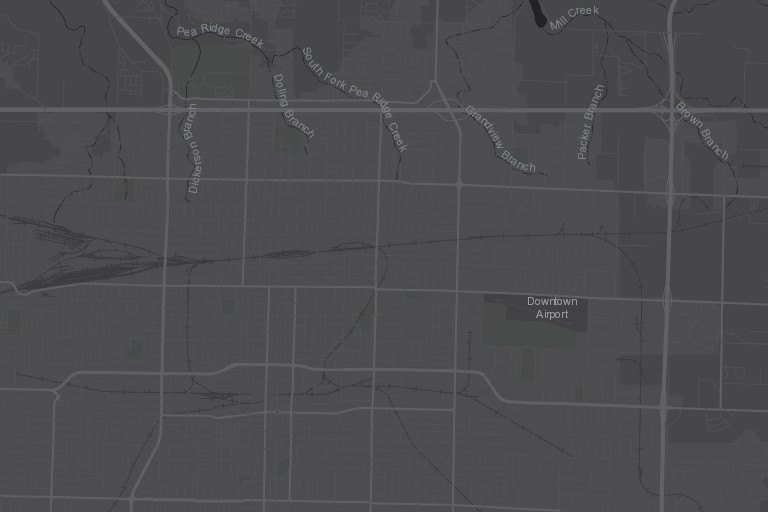
Source: Esri World Dark Gray Canvas — server.arcgisonline.com Canvas/World_Dark_Gray_Base tile/{z}/{y}/{x}
App treatment: none — the tile source itself
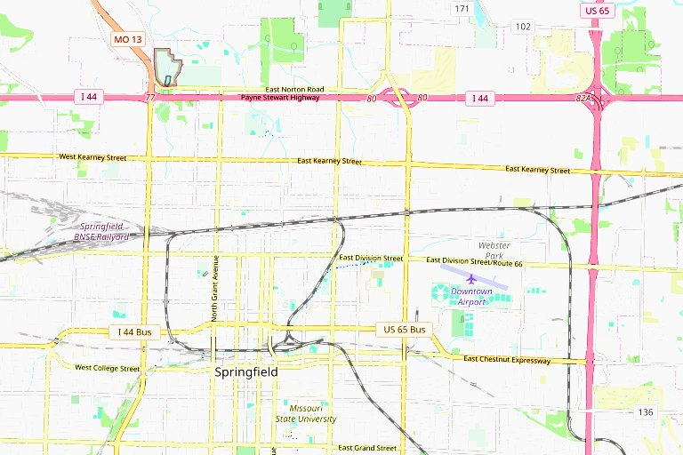
Source: OpenStreetMap tiles — tile.openstreetmap.org/{z}/{x}/{y}.png
App treatment: CSS filter contrast(1.55) saturate(1.35)
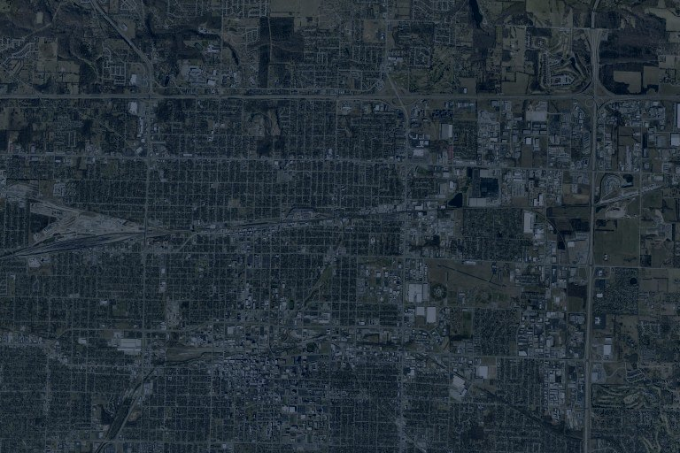
Source: Esri World Imagery satellite — server.arcgisonline.com World_Imagery tile/{z}/{y}/{x}
App treatment: CSS filter brightness(0.5) contrast(1.25) + blue color-wash pane over the tiles
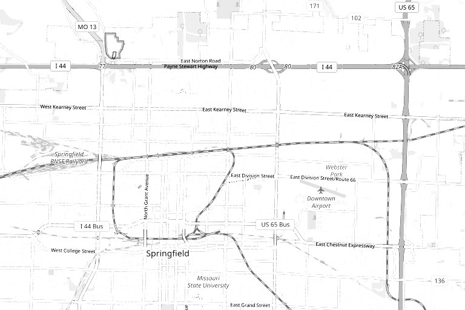
Source: OpenStreetMap tiles — tile.openstreetmap.org/{z}/{x}/{y}.png
App treatment: CSS filter grayscale(1) contrast(1.5) — black-and-white street graphic
Loud drill sergeant
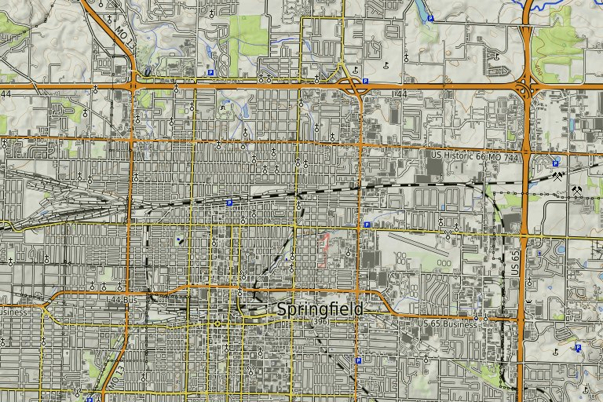
Source: OpenTopoMap — tile.opentopomap.org/{z}/{x}/{y}.png
App treatment: olive color-wash pane over the tiles + CSS contrast(1.05)
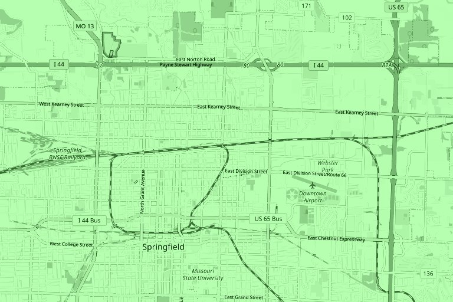
Source: OpenStreetMap tiles — tile.openstreetmap.org/{z}/{x}/{y}.png
App treatment: SVG colorize filter (feColorMatrix) — black→dark green, white→phosphor green
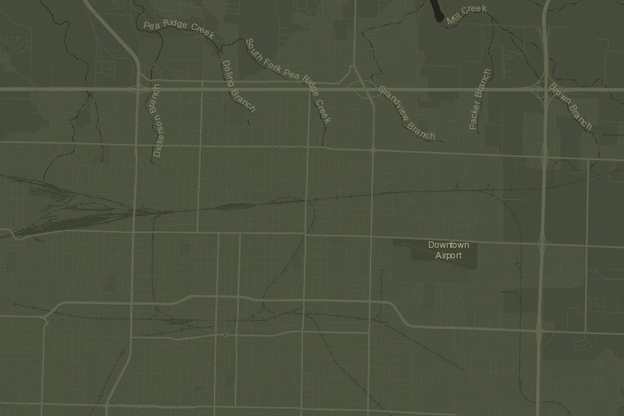
Source: Esri World Dark Gray Canvas — server.arcgisonline.com Canvas/World_Dark_Gray_Base tile/{z}/{y}/{x}
App treatment: CSS filter sepia(0.7) hue-rotate(35deg) saturate(1.1) brightness(0.9)
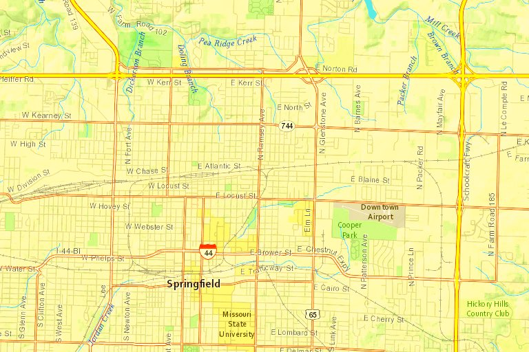
Source: Esri NatGeo World Map — server.arcgisonline.com NatGeo_World_Map tile/{z}/{y}/{x}
App treatment: CSS filter saturate(2.3) contrast(1.3) brightness(1.08) + yellow color-wash pane
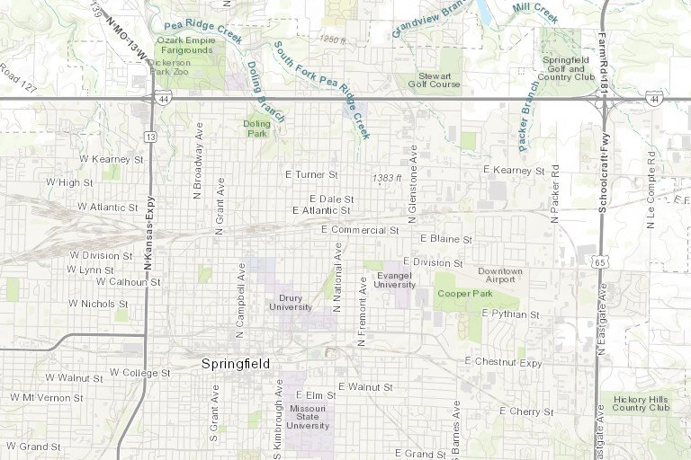
Source: Esri World Topographic — server.arcgisonline.com World_Topo_Map tile/{z}/{y}/{x}
App treatment: none — the tile source itself
By-the-book traffic officer
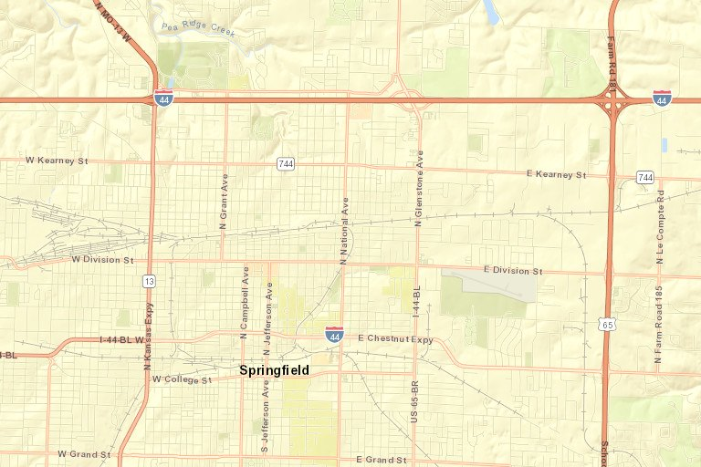
Source: Esri World Street Map — server.arcgisonline.com World_Street_Map tile/{z}/{y}/{x}
App treatment: CSS filter contrast(1.06) brightness(1.02)
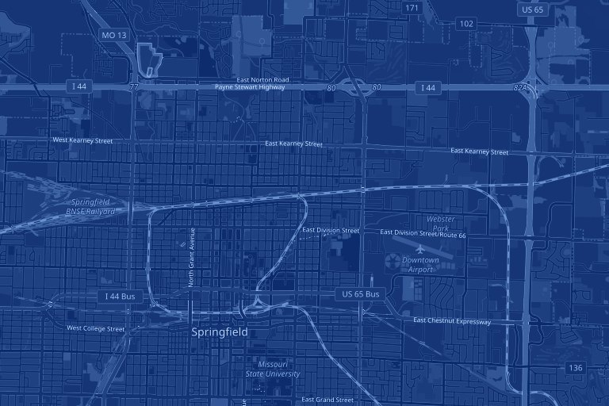
Source: OpenStreetMap tiles — tile.openstreetmap.org/{z}/{x}/{y}.png
App treatment: CSS invert(1) + SVG colorize filter (feColorMatrix) — dark blueprint blue with pale lines, like a city plan print
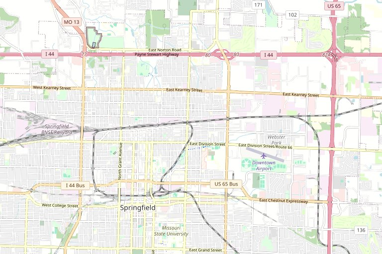
Source: OpenStreetMap tiles — tile.openstreetmap.org/{z}/{x}/{y}.png
App treatment: CSS filter brightness(1.07) saturate(0.75) — the detailed street map run pale and clean
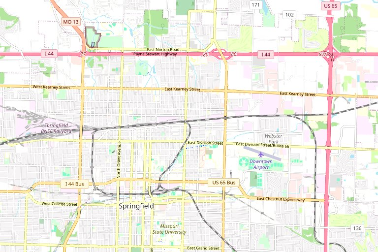
Source: OpenStreetMap tiles — tile.openstreetmap.org/{z}/{x}/{y}.png
App treatment: CSS filter contrast(1.18) saturate(1.15)
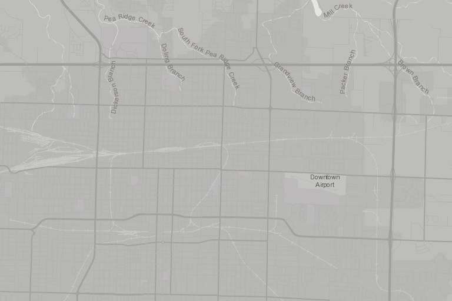
Source: Esri World Dark Gray Canvas — server.arcgisonline.com Canvas/World_Dark_Gray_Base tile/{z}/{y}/{x}
App treatment: CSS filter invert(1) contrast(1.1) on the dark tiles — flips them to a light scheme
Soft-spoken, mellow philosopher
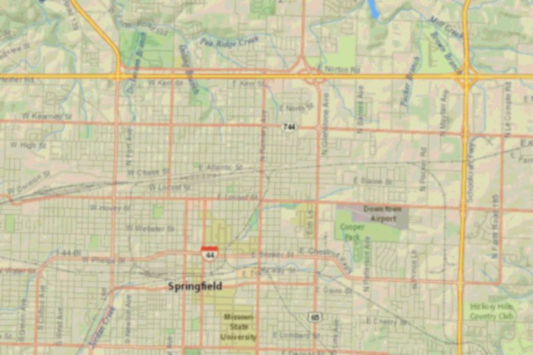
Source: Esri NatGeo World Map — server.arcgisonline.com NatGeo_World_Map tile/{z}/{y}/{x}
App treatment: SVG filter (feTurbulence + feDisplacementMap + blur) on the tile pane — softens edges like paint
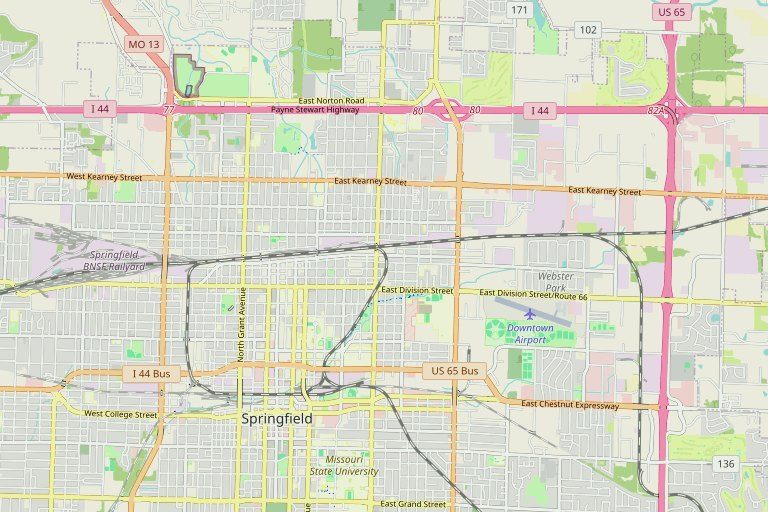
Source: OpenStreetMap tiles — tile.openstreetmap.org/{z}/{x}/{y}.png
App treatment: CSS filter hue-rotate(-12deg) saturate(1.35) brightness(1.04) + green color-wash pane
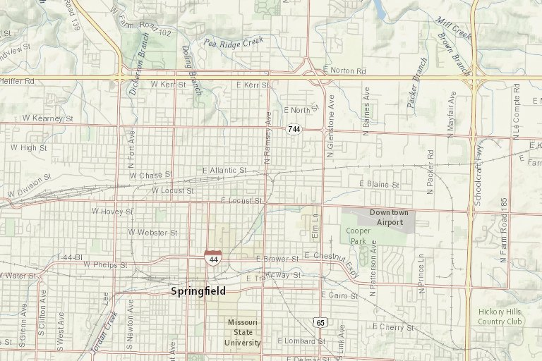
Source: Esri NatGeo World Map — server.arcgisonline.com NatGeo_World_Map tile/{z}/{y}/{x}
App treatment: CSS filter brightness(1.16) saturate(0.5) contrast(0.92)
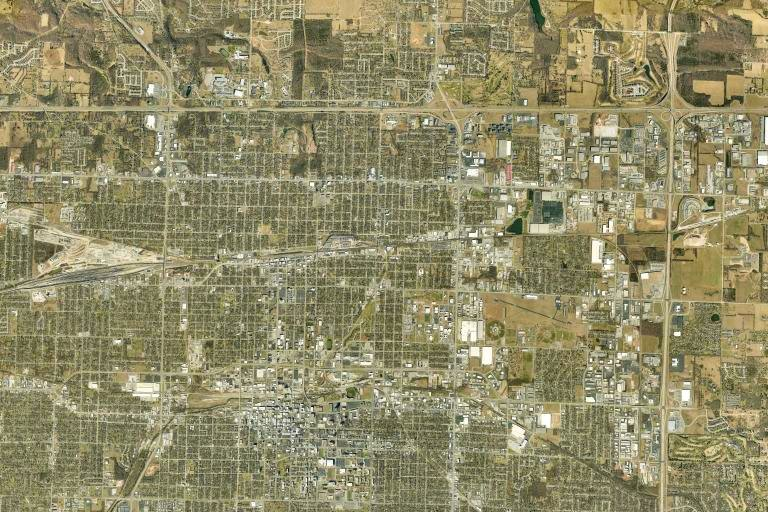
Source: Esri World Imagery satellite — server.arcgisonline.com World_Imagery tile/{z}/{y}/{x}
App treatment: CSS filter saturate(1.55) hue-rotate(-8deg) on the satellite tiles
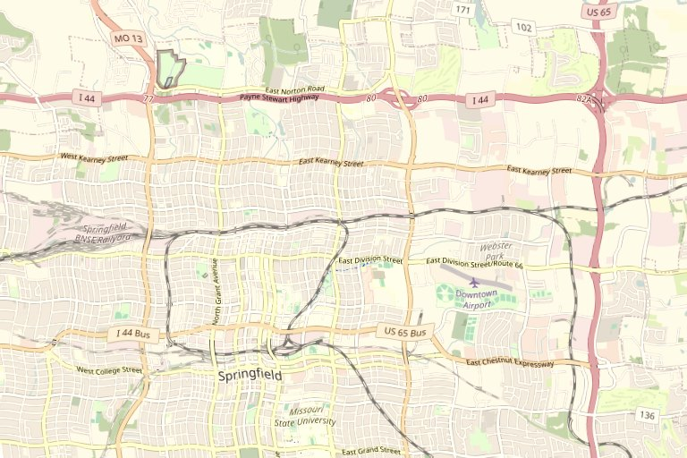
Source: OpenStreetMap tiles — tile.openstreetmap.org/{z}/{x}/{y}.png
App treatment: SVG filter (feTurbulence + feDisplacementMap) wobbles the lines like a hand drawing + CSS sepia(0.28)
Backseat planner
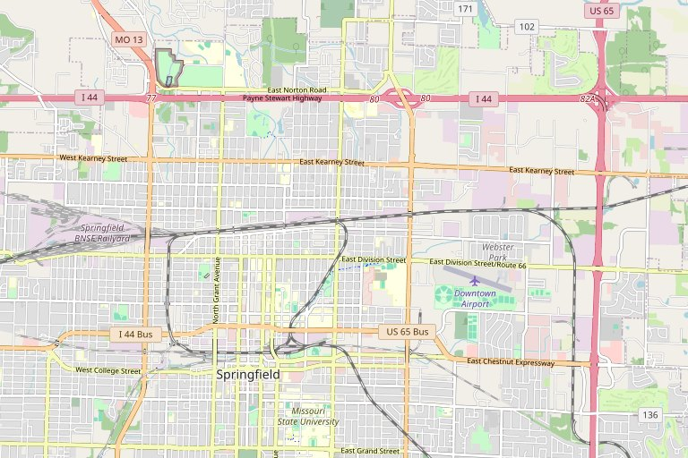
Source: OpenStreetMap tiles — tile.openstreetmap.org/{z}/{x}/{y}.png
App treatment: none — the tile source itself
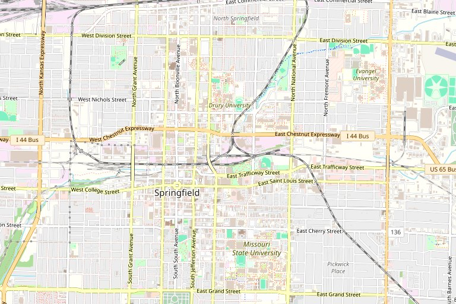
Source: OpenStreetMap tiles — tile.openstreetmap.org/{z}/{x}/{y}.png
App treatment: map runs one zoom level deeper (labels render twice as big) + CSS contrast(1.15) saturate(1.1)
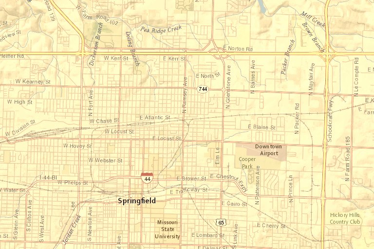
Source: Esri NatGeo World Map — server.arcgisonline.com NatGeo_World_Map tile/{z}/{y}/{x}
App treatment: CSS filter sepia(0.55) saturate(1.25) hue-rotate(-6deg)
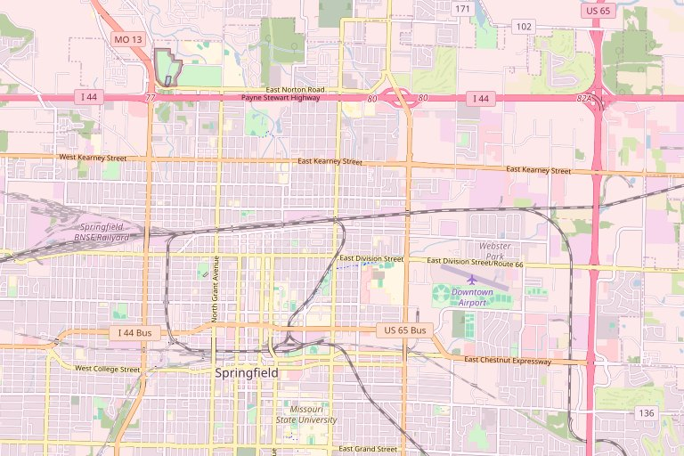
Source: OpenStreetMap tiles — tile.openstreetmap.org/{z}/{x}/{y}.png
App treatment: pink color-wash pane over the tiles + CSS saturate(1.12) brightness(1.03)
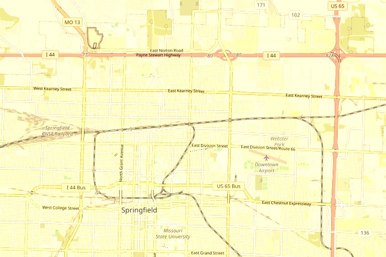
Source: OpenStreetMap tiles — tile.openstreetmap.org/{z}/{x}/{y}.png
App treatment: CSS filter sepia(0.65) saturate(1.7) brightness(1.05) — warm high-legibility yellow
Robot voice — wrong directions, total confidence
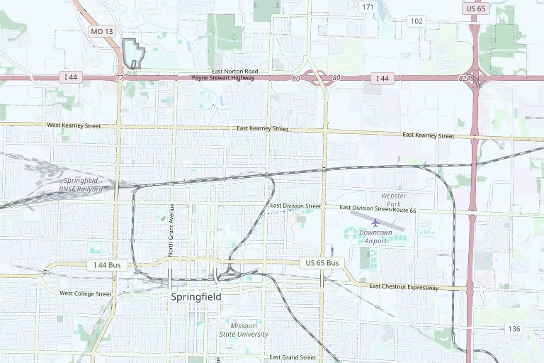
Source: OpenStreetMap tiles — tile.openstreetmap.org/{z}/{x}/{y}.png
App treatment: CSS filter saturate(0.5) brightness(1.09) contrast(1.06) + blue color-wash pane — pale glassy tech look
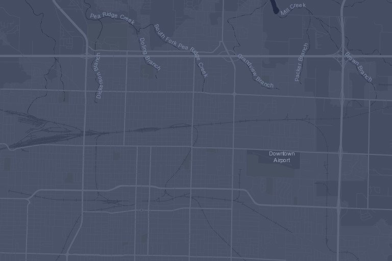
Source: Esri World Dark Gray Canvas — server.arcgisonline.com Canvas/World_Dark_Gray_Base tile/{z}/{y}/{x}
App treatment: CSS filter saturate(1.5) hue-rotate(-12deg) brightness(1.05) + blue color-wash pane
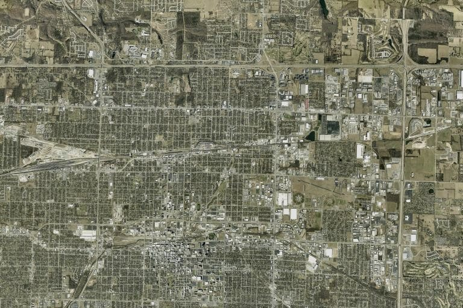
Source: Esri World Imagery satellite — server.arcgisonline.com World_Imagery tile/{z}/{y}/{x}
App treatment: CSS filter saturate(0.8) contrast(1.18) brightness(0.88) on the satellite tiles
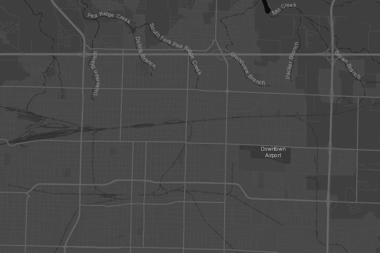
Source: Esri World Dark Gray Canvas — server.arcgisonline.com Canvas/World_Dark_Gray_Base tile/{z}/{y}/{x}
App treatment: CSS filter grayscale(1) contrast(1.25) brightness(1.12)
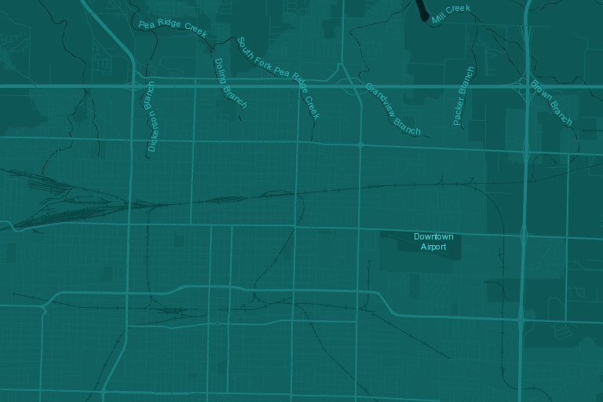
Source: Esri World Dark Gray Canvas — server.arcgisonline.com Canvas/World_Dark_Gray_Base tile/{z}/{y}/{x}
App treatment: CSS filter sepia(1) hue-rotate(130deg) saturate(2.6) contrast(1.15) — teal HUD tint, labels stay readable
Robot voice — backwards routes
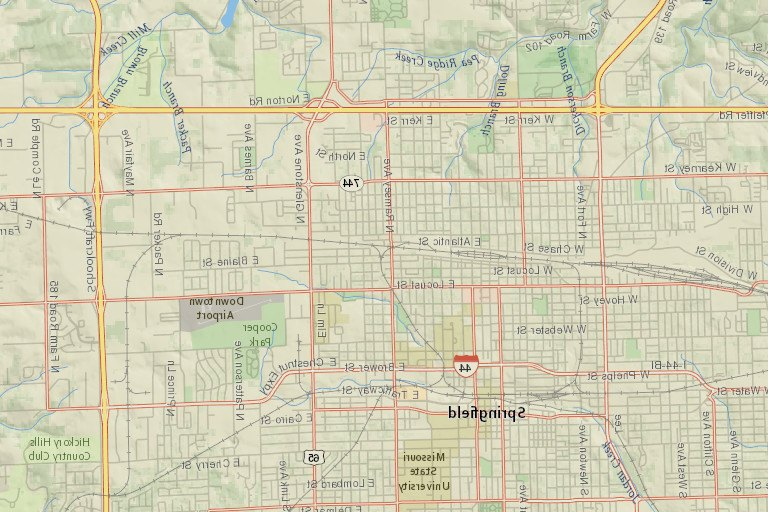
Source: Esri NatGeo World Map — server.arcgisonline.com NatGeo_World_Map tile/{z}/{y}/{x}
App treatment: CSS transform scaleX(-1) on the tile pane — the whole map (labels too) runs backwards. That's her gag
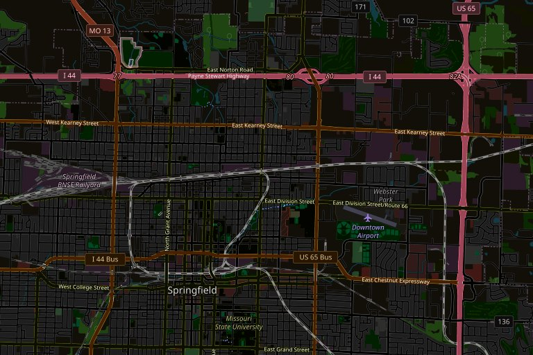
Source: OpenStreetMap tiles — tile.openstreetmap.org/{z}/{x}/{y}.png
App treatment: CSS filter invert(1) hue-rotate(180deg) — colors flipped, words still read right
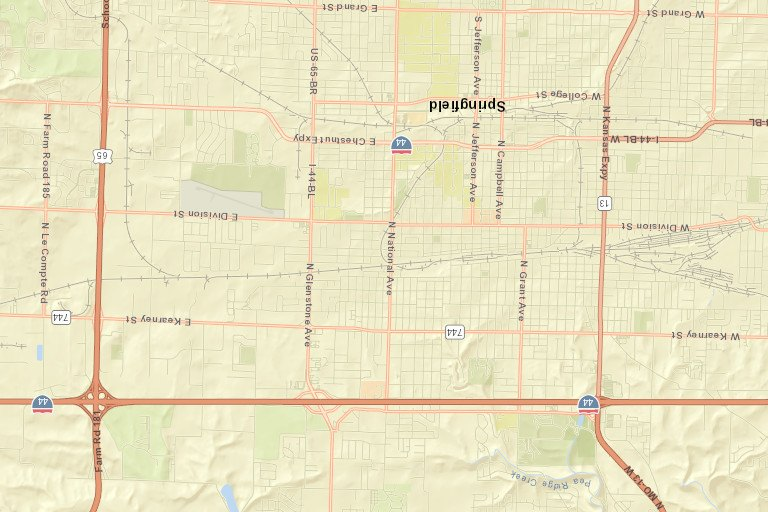
Source: Esri World Street Map — server.arcgisonline.com World_Street_Map tile/{z}/{y}/{x}
App treatment: CSS transform rotate(180deg) on the tile pane — south points up
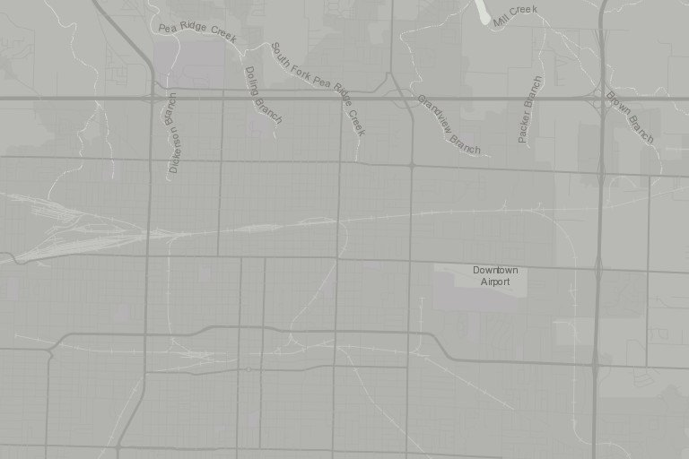
Source: Esri World Dark Gray Canvas — server.arcgisonline.com Canvas/World_Dark_Gray_Base tile/{z}/{y}/{x}
App treatment: CSS filter invert(1) saturate(1.2) on the dark tiles — her dark map shown inside-out
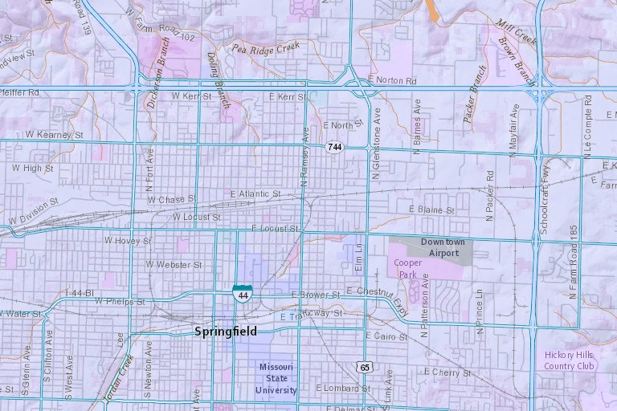
Source: Esri NatGeo World Map — server.arcgisonline.com NatGeo_World_Map tile/{z}/{y}/{x}
App treatment: CSS filter hue-rotate(180deg) saturate(1.15) — every color swapped for its opposite